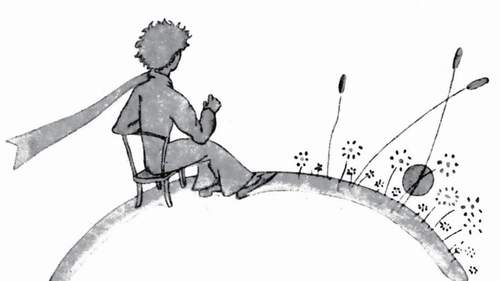

negoitescu — [home]
Cum învățarea limbilor străine mi-a schimbat viața
Învățărea și studiul limbilor și culturilor străine este în prezent una dintre activitățile mele filologice preferate, și una dintre activitățile care a avut cea mai mare influență asupra percepției mele despre expresivitatea și gândirea umană în general. Pe cât de mult ar putea părea un stereotip, învățarea unei limbi îți poate schimba aproape complet percepția și gândirea, iar cazul meu este un exemplu perfect al acestui fapt.
Prima limbă străină pe care am studiat-o a fost franceza, o limbă pe care o mai vorbesc/citesc și azi, chiar dacă mai rar. Din propria experiență, pot spune că dacă nu aș fi învățat franceza, probabil că nici nu aș fi descoperit pasiunea mea pentru lingvistică, filologie și filosofie. Am fost fascinat de literatura și filosofia franceză și, pe parcurs, am realizat multe aspecte fascinante despre limbile indo-europene și celelalte familii lingvistice, curentele de gândire filosofie, apologetică creștină și istoria artei. Iar epopeea mea prin lumea filosofiei și literaturii a plecat de la prima mea lectură în limba franceză: „Micul prinț” de Antoine de Saint-Exupéry, când aveam în jur de 15 ani.

Un jour, j’ai vu le soleil se coucher quarante-trois fois !1
Pentru a înțelege mai bine situația, înainte de a citi acest mic roman, nu prea eram cineva pasionat de lectură. Nu aș putea spune că nu-mi plăcea cititul, dar pur și simplu mă interesau mai mult artele vizuale, pe care încă le iubesc, și nu eram conștient de cât de conectate erau desenele, picturile și animația de literatură și filosofie. Până la citirea primei pagini, credeam că literatura era o altă „bestie” pe care nu doream încă să o descopăr; dar cât de greșit era raționamentul meu!
Desigur, după ce am citit textul încărcat emoțional și incitant lui Saint-Exupéry, acompaniat de superbele ilustrații în acuarelă realizate de acesta, am vrut să citesc și mai mult. Aceasta a fost scânteia necesară pentru începutul aventurii mele în lumea literelor, aceeași lume pe care o credeam prea complicată sau diferită față de îndeletnicirile mele.
Am decis, așadar, să citesc alte opere scrise de același autor, și am citit astfel romanele sale autobiografice Vol de Nuit, Terre des Hommes și Pilote de Guerre, din care am descoperit mai multe atât despre autor cât și despre literatură în general. Am citit apoi alte cărți asemănătoare, cum ar fi Alchimistul lui Paolo Coelho și, din pură intâmplare, am început să mă documentez despre literatura românească pentru prima dată datorită prezenței considerabile a autorilor români în mediul francofon.
Așa am descoperit operele multor scriitori și filosofi care mă fascinează și în prezent, cum ar fi Emil Cioran, Mircea Eliade, Ion Minulescu, George Călinescu și Vasile Alecsandri. În timp am început să citesc și literatură din afara sferei francofone, și am descoperit poeziile lui Nichita Stănescu, Tudor Arghezi și Ion Pillat, dar și scrierile lui Alexandru Odobescu, Alexandru Vlahuță și Nicolae Iorga care mi-au format gustul literar și aprecierea pentru această latură a creației artistice.
Bagajul de cunoștințe pe care l-am dobândit din lectura mea atât în limba maternă cât și în engleză, spaniolă, italiană etc. nu ar fi existat fără acest prim impuls în urma unei decizii care pare la început atât de banală. De asta învățarea unei limbi străine mi-a schimbat viața.
Dacă doriți să citiți textul original al romanului în limba franceză, puteți accesa această pagină web.
How Learning Foreign Languages Changed My Life
The learning and study of foreign languages and cultures is currently one of my favorite philological activies, and one of the hobbies that has had the biggest influence on my perception of expressiveness and human thought in general. As much as it may seem stereotypical, learning a languagea really can entirely change your perception and thought, and I am a perfect example of that.
The first foreign language I have studied was French, a language I still speak/read today, albeit rarely. From my personal experience, I can say that if I had not learnt French, I would probably have never discovered my passion for linguistics, philology, and philosophy. I was fascinated by French literature and philosophy and, along the way, I have found many fascinating aspects of Indo-European and other language families, schools of thought, Christian apologetics, and the history of art. And my odyssey across philosophy and literature all started from my first French lecture: “The Little Prince” by Antoine de Saint-Exupéry, when I was around 15.
Un jour, j’ai vu le soleil se coucher quarante-trois fois !2
For context, before reading this little novella, I was not really interested in reading anything at all. It wasn’t necessarilly that I disliked reading, I just was more interested in visual arts, which still is my favourite subject, and I was unaware just how connected drawings, paintings, and animation were to literature and philosophy. Up until opening this small book, I had thought that literature was an entirely different beast that I just wasn’t interested in fighting at that moment, but was I misguided in that thought!
Obviously, after having read Saint-Exupéry’s thought-provoking text paired with his wonderful watercolor illustrations, I wanted to read more. This was the spark I needed in order to start venturing in the world of letters, the very one I thought of as too complicated or unrelated to my interests.
I have decided to read a bit of the other works written by the same author, and read thus his autobiographical novels: Vol de Nuit, Terre des Hommes, and Pilote de Guerre, from which I discovered even more about the author and literature in general. Afterwards, I read similar books such as The Alchimist by Paolo Coelho and, out of pure chance, I started getting interested in Romanian literature for the first time due to the considerable presence of Romanian authors in French literature.
This is how I have discovered the works of many authors and writers that still fascinate me to this day, like Emil Cioran, Mircea Eliade, Ion Minulescu, George Călinescu, and Vasile Alecsandri. Eventually, I started reading literature outside the sphere of influence of French culture and discovered the poems of Nichita Stănescu, Tudor Arghezi, and Ion Pillat, as well as the tasteful writings of Alexandru Odobescu, Alexandru Vlahuță and Nicolae Iorga, all of which having formed my literary taste and appreciation for this side of artistic creation.
The knowledge I have now from reading both in my native language (Romanian) as well as in English, Spanish, Italian, etc. would have not been without this first impulse caused by what seems at first such a trivial decision. This is why learning a foreign language changed my life.
If you wish to read the original French text of the novella, you can find it on this webpage.
email: tescu [arond] tutamail [punct] com